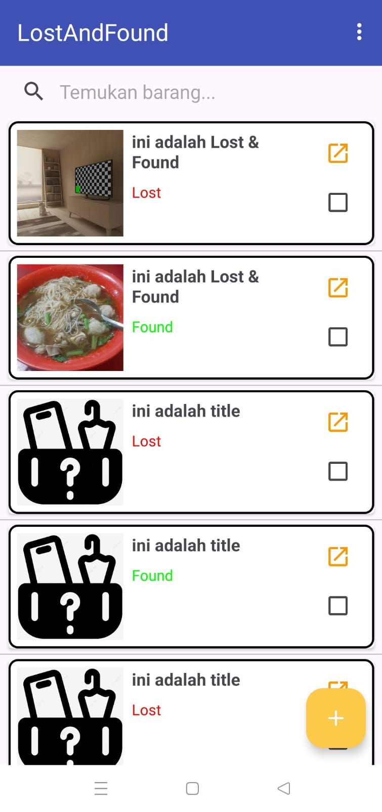

Lost and Found Application
Aplikasi Pelaporan Barang Hilang Kampus

Mobile Application - Kotlin
Aplikasi Lost & Found Kampus merupakan platform digital yang memudahkan mahasiswa dan staff dalam melaporkan serta menemukan barang hilang di lingkungan kampus. Sistem ini dikembangkan dengan arsitektur modern menggunakan REST API untuk memastikan kompatibilitas across platform.
Fitur Utama:
Pelaporan Barang Hilang:
- Upload lampiran file (foto barang/dokumen pendukung)
- Input tanggal kehilangan dengan kalender interaktif
- Deskripsi detail (kategori, ciri-ciri, lokasi terakhir)
- Sistem tagging otomatis berdasarkan kategori barang
Pencarian Cerdas:
- Filter berdasarkan tanggal, kategori, dan lokasi
- Notifikasi real-time ketika ada barang yang match
- History pencarian tersimpan
Aplikasi ini dikembangkan menggunakan Kotlin untuk Android dengan arsitektur MVVM. Backend API dibangun dengan Node.js dan MongoDB untuk penyimpanan data yang fleksibel. Sistem ini telah membantu mengurangi 30% barang hilang yang tidak kembali dibanding sistem manual sebelumnya.
More Details
- Kategori: Aplikasi Mobile
- Platform: Android
- Teknologi: Kotlin, Retrofit, Firebase, REST API
- API: Custom RESTful API dengan Node.js